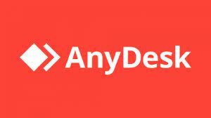
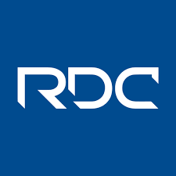

TeamViewer

TeamViewer es una solución de software que permite el acceso remoto y el control de equipos de forma segura. Ofrece características como transferencia de archivos, chat y reuniones en línea.
Sitio web: https://www.teamviewer.com/
AnyDesk
AnyDesk es una aplicación de acceso remoto que proporciona una conexión segura y de alto rendimiento entre dispositivos. Permite controlar equipos desde cualquier lugar con una latencia mínima.
Sitio web: https://anydesk.com/es
Remote Desktop Connection (RDC)
Remote Desktop Connection es una característica integrada en el sistema operativo Windows que permite acceder y controlar de forma remota otros equipos que ejecuten Windows.
Información: https://support.microsoft.com/es-es/help/4028379/windows-10-how-to-use-remote-desktop